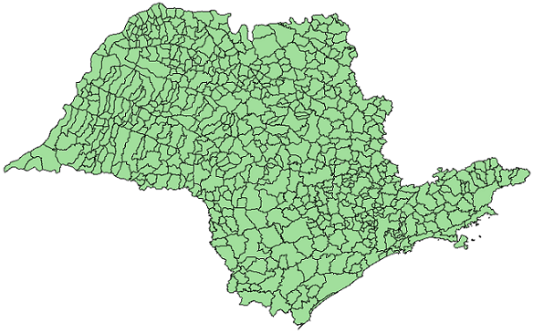
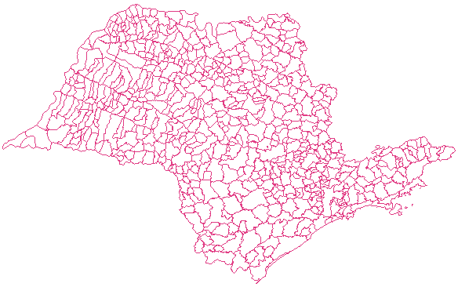

Polygon to Line
The Polygon
to Line
operation generates a new layer of lines based on a layer of polygons. The
figure bellow shows an examples of polygon to line operation.
|  |
 |
| Input layer of polygons. |
Output layer of lines. |
The output is a new layer that
contains all data values of the input layer including the lines
objects.
It is
accessed through:
Plugins > Vector Processing > Polygon to Line...
- Select the Input layer
to apply the operation. The input layer needs to be composed by polygons.
- Optionally, check the option Only selected if you wish to
process only the objects that are selected in the map display.
- Inform the Output Repository
by clicking on:
 to
select the output
directory and also inform the new layer name to store the result, or
to
select the output
directory and also inform the new layer name to store the result, or to
select the Data Source.
to
select the Data Source.
- Inform the new Layer Name
to store the aggregation result, if the repository is a data source.
- Click OK to perform the
operation or Cancel to close the interface.
Usage Tips:
The Polygon to
Line result can be stored in different TerraLib data sources.
Check data
source selector for more
details on how to select a data source.